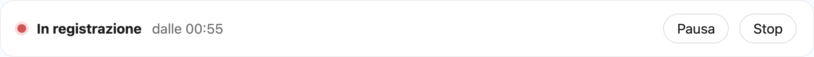
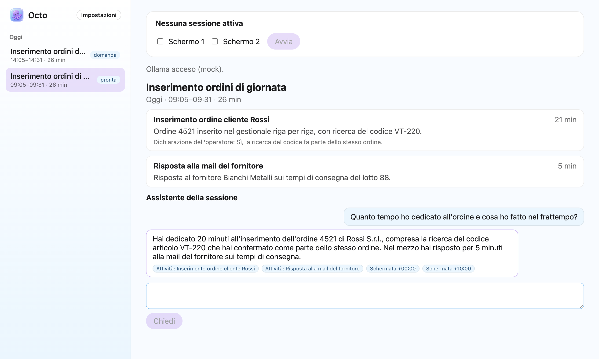
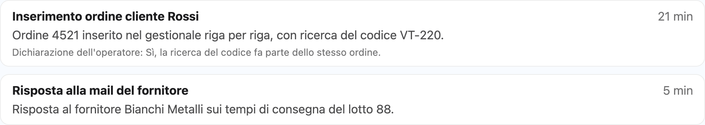
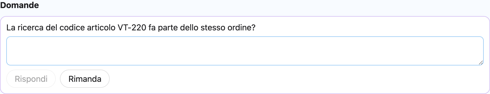
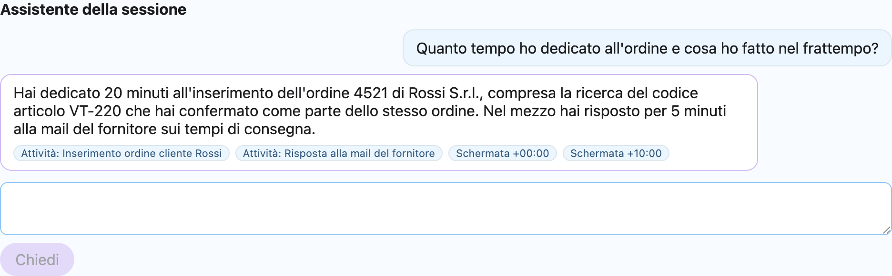

Registrazione con la mascotte sempre visibile
Scegli lo schermo, premi Avvia. Il polpo nell'angolo mostra che Octo registra; pausa e stop restano a un clic. Nessuna registrazione nascosta, mai.

Octo Core {version} è disponibile
Dal lavoro osservato a un processo documentato. Prima di automatizzare.
Octo è un'app per computer: scaricala da macOS, Windows o Linux.
Firmato e notarizzato · GPL-3.0 · nessun account

Scegli lo schermo, premi Avvia. Il polpo nell'angolo mostra che Octo registra; pausa e stop restano a un clic. Nessuna registrazione nascosta, mai.

Alla chiusura, il testo letto dalle schermate diventa attività con nome, riassunto e tempo: unione degli intervalli, mai somme gonfiate.

Al massimo tre domande al giorno, solo quando il modello è incerto. La tua risposta resta sull'attività come dichiarazione dell'operatore, nel dettaglio e nel report.

Chiedi cosa è successo nella sessione: ogni risposta cita attività e schermate, verificate dal motore. Senza riscontri, la risposta è marcata come non verificata.

Esporta un riepilogo con tempi, evidenze e dichiarazioni, più una cartella per attività con il suo activity.json. I tratti non classificati finiscono in una cartella da verificare.
Octo registra e analizza sul tuo computer. Il modello locale è Ollama in loopback; il cloud parte solo se lo chiedi, per una sessione, con il testo delle schermate approvate e mai con le immagini. Codice aperto con licenza GPL-3.0.
Versione {version} · {date}
.dmg
Intel.dmg
Firmato con Developer ID e notarizzato da Apple.
.zip
ARM64.zip
Firmato con Azure Artifact Signing. SmartScreen può avvisare finché la firma non ha reputazione.
.zip
ARM64.zip
Archivio zip, senza firma: confronta l'hash.
Verifica i file con SHA256SUMS.txt Report di firma Windows Note di rilascio su GitHub
Per leggere le schermate serve Ollama sullo stesso computer: i modelli li scarica Octo con un clic.
Niente, di default. Registrazione, lettura del testo, analisi ed export avvengono in locale. Un modello remoto riceve solo il testo delle schermate che approvi, per una sessione, dopo una conferma esplicita; le immagini non partono mai.
No. Octo non ha login né account cloud. L'analisi remota facoltativa usa una tua chiave OpenRouter o Anthropic, salvata nel keystore del sistema.
Ollama in esecuzione su questo computer, il modello che legge le schermate e un modello per l'analisi, locale o con una tua chiave. Octo controlla tutto prima di registrare: se manca qualcosa lo indica e scarica i modelli con un clic. Serve solo installare Ollama.
I pacchetti Windows sono firmati, ma una firma nuova non ha ancora reputazione per SmartScreen. Controlla l'hash con SHA256SUMS.txt, poi scegli Ulteriori informazioni → Esegui comunque.
Sì. Octo Core è software libero con licenza GPL-3.0-or-later: puoi usarlo, studiarlo, modificarlo e ridistribuirlo alle stesse condizioni.
Su GitHub, con la roadmap, i gate di integrazione di ogni fase e i documenti di sicurezza.
Una sessione autorizzata, poche domande, un report verificabile.